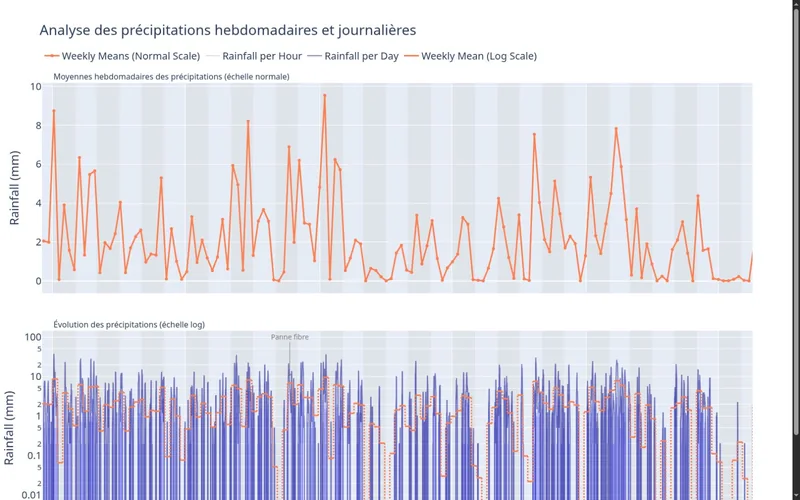
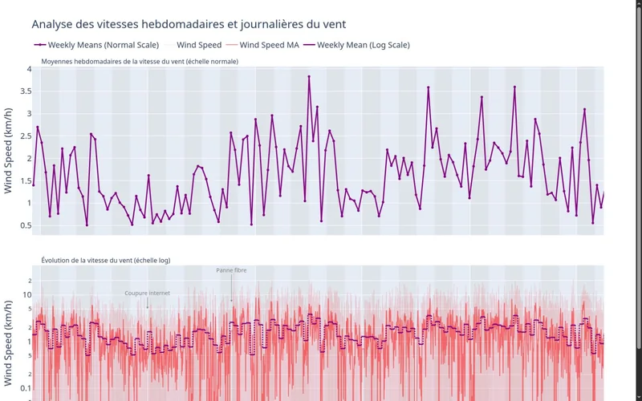

Fissures visibles
Des mesures manuelles décrivent un historique par paliers et un suivi récent réalisé à un autre point. Cette différence de protocole interdit une comparaison directe non justifiée.
Expertise industrielle · Mesures réelles
À partir du suivi de fissures, d’un joint de dilatation, d’un mur de soutènement et de leur environnement météorologique, cette démonstration rend visible toute la chaîne qui va du terrain à une interprétation responsable.
Cadre de consultation. Les relevés sont réels et privés ; ils n’appartiennent à aucun client. Les résultats sont précalculés : la visite ne sollicite ni le Raspberry Pi, ni la station météo, ni une machine de calcul.
Situation étudiée
Le suivi cherche à caractériser des évolutions lentes au milieu de mouvements environnementaux, de changements de protocole et d’incidents d’acquisition. Les séries ne sont donc pas fusionnées par défaut : leur sens dépend de l’objet, du point de mesure, de l’instrument et de la période considérés.
Des mesures manuelles décrivent un historique par paliers et un suivi récent réalisé à un autre point. Cette différence de protocole interdit une comparaison directe non justifiée.
Son mouvement périodique constitue une série physique distincte. L’ajustement décrit les observations disponibles ; il ne démontre pas à lui seul une relation avec la fissure.
Un comparateur automatique mesure un déplacement relatif à haute fréquence. Le signal mêle mouvement quotidien, interruptions et artefacts avant toute recherche d’une tendance lente.
Température, humidité, pluie, lumière, UV et vent apportent un contexte explicatif potentiel. Les relations observées entre variables ne valent pas preuve de causalité structurelle.
Chaîne de preuve
La fiabilité ne vient pas d’un graphique isolé. Elle dépend de la continuité entre le phénomène, le protocole de mesure, les données conservées, les contrôles, les traitements et le niveau de conclusion réellement permis.
Phénomène
Distinguer l’évolution recherchée des mouvements périodiques, des événements ponctuels et des limites propres à chaque point de mesure.
Instrumentation
Pied à coulisse numérique, comparateur automatique et station WeatherSense répondent à des protocoles et à des fréquences différents.
Acquisition
Les relevés manuels sont ajoutés périodiquement. Le capteur mesure environ toutes les trente secondes via un Raspberry Pi ; la météo suit sa propre chaîne d’acquisition.
Qualité
Coupures, lacunes, doublons, pics, sauts irréalistes, changements de pile et particularités d’horodatage sont rendus visibles avant tout calcul.
Analyses
Paliers, changements d’état, périodicités, distributions, relations entre variables et intervalles d’incertitude répondent à des questions différentes.
Interprétation
Un ajustement décrit une série ; une corrélation suggère une piste. Une explication physique n’est retenue que lorsque les données et les contrôles la soutiennent.
Les données brutes, les transformations et les versions d’artefacts sont conservées et contrôlées en amont. La page publique expose les résultats utiles au raisonnement ; elle ne relance aucun calcul et ne publie pas les observations privées.
Mesures et analyses
Ces quinze restitutions HTML ont été validées visuellement pour leur présentation. Cette validation graphique ne signifie pas que chacune constitue, à elle seule, une conclusion scientifique validée.
Famille 01
Deux élévations vectorielles à la même échelle situent le bâtiment, le mur routier et le capteur S1, sans transformer le schéma en diagnostic structurel.
Paliers observés, événements de 2016, ajustements descriptifs et intervalles d’incertitude. Les modèles ne démontrent pas un effet causal des travaux.
Restitution du suivi récent et de sa dynamique propre. Le point de mesure n’est pas le même que dans l’historique : les deux séries restent séparées.
Mesures observées, ajustement périodique et incertitude associée. Aucune causalité météo ni relation avec la fissure n’est démontrée par cette figure.
Chaque point conserve une valeur source dans l’ordre des lignes physiques : « valeur source — unité à confirmer » et « temps source naïf — fuseau à confirmer », sans correction, conversion, interpolation, jointure, causalité ni diagnostic.
Famille 02
Évolution des mesures et de leurs moyennes mobiles, avec repérage des incidents d’acquisition documentés.
Comparaison des minima et maxima intérieurs et extérieurs, en conservant les événements signalés dans la série.
Lecture conjointe de l’humidité et des contenus en eau intérieurs et extérieurs, avec leurs tendances lissées.
Évolution de deux mesures environnementales et de leur différence de ratio, présentées sans interprétation structurelle automatique.
Moyennes hebdomadaires sur échelle normale et mesures détaillées sur échelle logarithmique pour conserver les faibles valeurs lisibles.

Moyennes hebdomadaires et série détaillée sur deux échelles pour distinguer tendance générale et variabilité des mesures.

Représentation radiale des directions observées, rapprochées des vitesses correspondantes.
Matrice des distributions et relations sur les valeurs affichées, sans transformation statistique supplémentaire ; le contenu en eau extérieur est une quantité dérivée.
Famille 03
Sélection directe d’une mesure météorologique pour examiner sa série brute, sans lissage, interpolation ni fusion de champs.
Complétude, valeurs aberrantes, trous temporels, doublons et disponibilité des champs de vent : des constats avant correction, pas un nettoyage silencieux.
Périmètre actuel des figures. Cette sélection couvre la vue géométrique du dispositif, les mesures manuelles de fissures et du joint, le signal brut du comparateur automatique et la météo. Elle ne permet ni conversion angulaire, ni causalité, ni diagnostic structurel.
Lecture responsable
Une restitution utile indique la nature de chaque résultat et maintient une frontière nette entre mesure, correction, modèle et hypothèse.
Chaque série reste rattachée à son objet, son instrument, son point de mesure, sa fréquence et sa période.
Un incident d’acquisition ou une valeur physiquement improbable est documenté avant toute exclusion ou correction.
Paliers, périodicités ou intervalles d’incertitude décrivent les données dans un cadre explicite ; ils ne valent pas cause physique.
La stabilité d’un ouvrage, l’effet causal d’un événement ou le lien entre deux séries exigent d’autres preuves qu’une proximité graphique.
Transposabilité
La même démarche s’applique à une chaîne de capteurs, à un procédé industriel, à une série physico-chimique ou à un dispositif IoT dont il faut fiabiliser les mesures avant de décider.
Premier échange
Un échange permet de qualifier les données disponibles, les contraintes du terrain et le niveau d’intervention utile : audit flash, étude de séries, architecture IoT/Data ou accompagnement plus long.